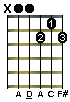
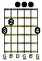

How to Read Guitar Tabs and Chords
A Guide to the Guitar Galaxy
What is Tab?
"Guitar Tab" (more boringly known as "tablature") is a method of writing down (or transcribing) the notes and chords in music. Similar to traditional sheet music but simpler and less detailed, tabs have flourished in the internet age due to how easy they are to create and share, enabling anyone anywhere to tab, collab, show and grow their music mojo. Fa sho.
Reading Guitar Tabs (simple):
Guitar tabs simply indicate notes to play - strings to strum and frets to fret.
Tab is read from top to bottom and left to right.
Tab is typically written in sections of 6 lines (or 4 lines for bass guitar) with each line representing a string on the guitar. The top line is the highest pitch "e" string. The bottom line is the lowest pitch "e" string. If the string names aren't given explicitly, assume normal tuning. Here are some blank tab lines with only the string names:
Guitar Tab (normal tuning)E|----------------------- B|----------------------- G|----------------------- D|----------------------- A|----------------------- E|-----------------------
Bass Tab (normal tuning)
G|----------------------- D|----------------------- A|----------------------- E|-----------------------
Eh? Unless you love the sound of silence, these tabs suuuuck... so let's add some notes!
When a number appears on the line it's our signal to pluck the string, the number shows you which fret to depress with your fretting finger.
A "0" means to play the open string (without pressing any frets).
A "1" means to play the string with your finger pressed down on the 1st fret.
E|---------------------- B|---------------------- G|---------------------- D|---------------------- A|---------------------- E|---0--1--2------------ <- Click to play as midi!
These are the notes E, F, and F# played on the bottom E starting with the open string and moving down the frets one at a time.
When two or more notes are written on top of one another, it means to play all the notes together as a chord. For example:
E|----3----------------- B|----3----------------- G|----4----------------- D|----5----------------- A|----5----------------- E|----3-----------------
The same chord could also be written like this:
E|--------3------------- B|-------3-------------- G|------4--------------- D|-----5---------------- A|----5----------------- E|---3------------------
The slight vertical offset simply means to strum the chord more slowly (starting with the bottom string). Each string is strummed slightly later than the previous string, but all the strings are played with one swipe of your strumming hand. Here is the same chord again but with bigger gaps between the notes:
E|-----------------3----------------- B|--------------3-------------------- G|-----------4----------------------- D|--------5-------------------------- A|-----5----------------------------- E|--3--------------------------------
To play this you would likely pick each string separately (rather than strumming all the strings together in one swipe of your paw). Since the notes above are all evenly spaced one can assume that they are all the exact same duration. Now let's see what happens when that isn't the case.
Timing:
Horizontal space (filled with dashes) is used for the passage of time. More space between the notes indicates more time between the notes. Hear the extended pause before the "4" is finally played? That's what I'm talking about!
happy birthday to... you e|--------------------------|---------| b|--------------------------|---------| g|--------------------------|---------| d|-------------------0------|---------| a|-0---0-2-----0------------|----4----| e|--------------------------|---------|
Note: The '|' (pipe) characters (seen above around the '4') are bar markers that separate measures/sections of notes to help provide a clearer visual structure. The bars do not count in the passage of time.
Chords in a Tab:
Most songs can be broken down into just a few chords (2 or more notes played simultaneously). Tabs with chords are easier to read, write and play! For example, you could write a D7 like this:
E|---2--- B|---1--- G|---2--- D|---0--- A|---0--- E|-------
Or like this:
 ]
This shorthand notation is nice and easy, yes? Using chord names can save you time, space and 15% or more on car insurance. Damn you insurance gecko get out of my head!
Reading Guitar Chord Chart Diagrams:
SPOILER ALERT: There are actually multiple ways to play any given chord and still hit all the right notes. If you're the type of dude who delights in details, you can explicitly define how each chord should be played like this:
Here's my big [D7D7
] EADGBE <-String names -00212 <-Frets
With this you can create your own chord adventure to define chords any way you wish!
Note: in this chord form, we've seen an 'x' sometimes being used instead of a '-' to indicate to not play the string.
We do not recommend this to avoid confusion as an 'x' usually means to play the string muted, and only mention it here to help
you understand these bastard chorded tabs.
Slash Chords
You may come across some chords like this: [G/AG/A
],
and notice that its chord chart looks just a [GG
] chord chart.
They are almost the same chord, but the slash in [G/A] indicates
there is an additional "A" note. Chords with the slash ("/")
are called "slash chords" (or split chords). It's really just a regular chord with an additional bass note. The slash
separates the chord name and the bass note. So the [G/A] chord is actually an
"G" major chord with a lower "A" bass note added to it. [D/Bb] would be a "D" major chord with a "Bb" note added to
it.
Advanced Symbols
| h | hammer on (also written as ^ - for a hammer on or pull off) |
| p | pull off |
| b | bend string up |
| r | release bend |
| / | slide up (also written as "s" - for an up or down slide) |
| \ | slide down |
| v | vibrato (not to be confused with tremolo). Also written as "~". Created by wiggling the string back and forth at the frets. |
| t | note is tapped. As taps can be done with either hand, you may see an L or R next to the t (indicating the Left or Right hand). Otherwise, assume the Right Hand (strumming hand). |
| x |
play string muted - with heavy damping to get a choppy, percussive sound.
Use your fretting hand to lightly damp the string so that when played it sounds dead. Note that the use of an x in a tab line is different from the use of an "x2" found at the end of a line, like... |
| x2 | indicates the preceding staff lines (everything to the left) should be repeated the number of times indicated (2 in this example). |
| >> | indicates the note should be held/sustained. |
| . | indicates the note should be cut (for a staccato effect). |
| () | used around notes to signify grace notes (or sometimes optional notes). |
| <> | used around notes to signify both natural harmonics (at the 5th, 7th and 12th frets) and the (even more difficult to play) artificial, or pinched, harmonics. |
Hammer ons
Hammer ons are played by quickly and firmly pressing a finger on the fret (without picking the string). In this example the open A string is with a finger on the 1st fret and then the 3rd fret is "hammered" (without the string being picked):
E|---------------------- B|---------------------- G|---------------------- D|---------------------- A|--1h3----------------- E|----------------------
Pull offs
Pull offs are played by quickly releasing a finger on a fret (without picking the string). In this example the A string is picked once with the 1st fret held down briefly and then released. The quick release is the pull off, done correctly it will result in the open string being heard:
E|---------------------- B|---------------------- G|---------------------- D|---------------------- A|--1p0----------------- E|----------------------
In both hammer ons and pull offs, the second note tends to be less loud than the first (especially on an acoustic). A slight sideways motion of the fretting finger while pulling off will add extra vibration to the string and give you some extra volume.
Bends
Bending a string (without a whammy bar) is accomplished by applying sideways tension to the string (with the fretting hand)
which raises the pitch of a note.
Bends are more difficult on acoustic guitar than electric,
and become easier as you move down the neck (into higher fret numbers).
Around the 5th+ fret anyone should be able to bend a string up to the next
semitone.
When you see a "b" next to a fret number you know a bend is coming.
How much to bend the note up is indicated in the number that follows the "b".
For example, here we would pick the "E" string on the 5th fret then apply enough bend pressure to the string to raise the pitch up so it
sounds just like the 6th fret:
Bend up E|------------------- B|------------------- G|------------------- D|------------------- A|------------------- E|--5b6--------------
Bend Release
Releasing a bend restores the pitch back down to its original tone by releasing the horizontal tension on the fret. Here's an example where we pluck the E string while pressing down on the 5th fret, bend the string's pitch up to sound like the 6th fret, then release the bend to again sound like the 5th fret:
Bend up and back down E|------------------- B|------------------- G|------------------- D|------------------- A|------------------- E|--5b6r5------------
Slides
Ready to slide your fretting hand up and down that sexy neck of a guitar you got there?
The /, \ and
s characters
between two numbers tells you the frets to begin and end on during your slide journey.
And if you can remember which type of slash is a backslash and which is a forward slash, congratulations. Nerd.
In this example we would pluck the "B" string with our finger on the first fret, then slide
from the 1st fret down to the 5th fret.
Slide E|------------ B|--1/5------- G|------------ D|------------ A|------------ E|------------
Tabbing Tips
Ready to share your musical and tabbing talents with the world? Follow these tips to make your tabs ass kickin, guitar shreddin good.
Monospace fonts
If you write a tab outside of TabNabber for some reason, FU! JK. Just make sure the font is monospace (characters all the same width), "Courier" and "Courier New" are common. If an "m" isn't the same width an "i" character, your tab will be so hard to space out correctly it will suck so much it'll make sex workers gawk. :o
Define Tab Symbols
h - hammer on p - pull off b - bend r - release bend / - slide v - vibrato t - tap x - play string muted x2 - repeat number of times shown >> - hold note . - cut off note () - grace notes <> - harmonics
Including a symbol legend is always helpful for your readers, especially if you deviate from the standard set of symbols. More advanced playing techniques (such as grace notes and harmonics) aren't often seen in the wild, so if you are going to include them you should definitely include a legend. For example, this tab shows a grace note on the 10th fret and a harmonic on the 12th:
() - grace notes
<> - harmonics
E|----------------------
B|----------------------
G|----------------------
D|----------------------
A|----------------------
E|--(10)11-----<12>-----
Include Section Labels
Most songs have sections that repeat throughout (eg: CHORUS, VERSE, RIFF 1, RIFF 2, etc) - so if you label these sections you can keep your tab shorter and easier to read.
Lyrics
Having at least a few lyrics to follow and line up to a tab makes it easier to understand the timings in the song in the highly likely event that the tab doesn't have perfect timing. If nothing else, tabs that include a lyric here and there should be more popular, as the lyrics will help more people find it on the google.
Include Other Details
Including metadata (other information about the song) such as other artists, composers, or if the song is heard in a film, tv show or commercial is always interesting and will help more people find your tab in the google.
Avoid the Crowd - it's a funkin' pandemic FOR THE LOVE OF GOD
In the tab below, are you supposed to play 1-2-1, or 12-1, or 1-21?
Hard to read and... THE NOTES GOT COVID!E|-------| B|--121--| G|-------| D|-------| A|-------| E|-------| feelingclaustrophobic?
Easy to read
E|--------------| B|--1-2-1-------| G|--------------| D|--------------| A|--------------| E|--------------| m u c h b e t t e r
Moral: keep at least one space (or dash) between each separate note.
Have an addition or improvement to the tab notation? We're all ears. Maybe half an ear.
[Back To The Top]